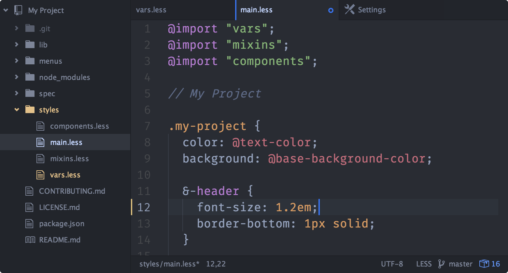
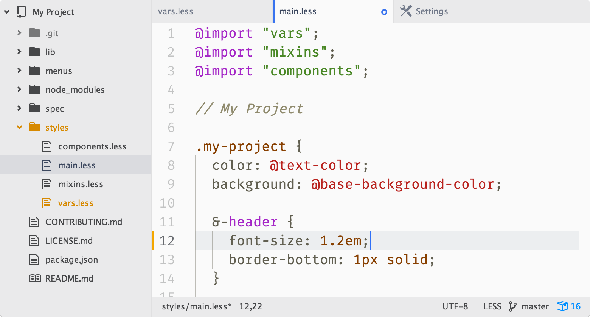
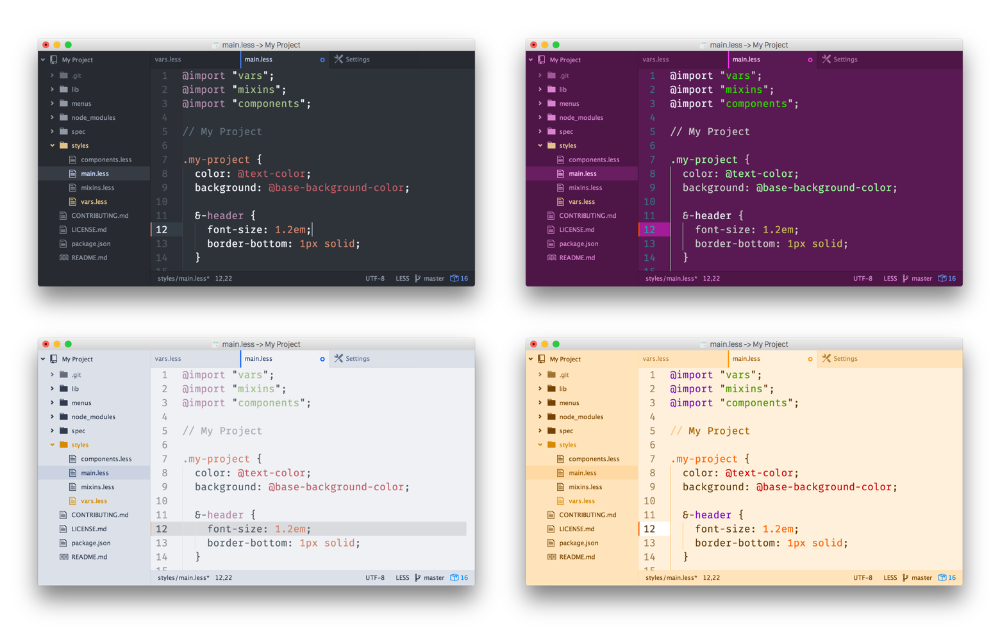
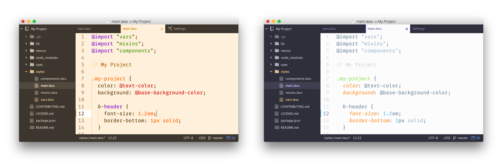

New themes
February 18, 2015 simurai
Tweet
We’ve bundled a new theme family called “One” themes. They come in dark and light variations, both for UI and Syntax. They have a blueish tone and a modern appearance. Here are some screenshots:


Syntax highlighting is a pretty personal thing and once you get used to a certain scheme it’s hard to switch to something completely new. For that reason Atom lets you pick the themes for the syntax and rest of the UI individually. A downside to that is that Syntax and UI themes might not always match and it will throw your zen state out of balance. But there is help. If you combine your favorite Syntax theme with the One UI themes, in most cases they will adjust automatically and look like they’re made for each other.

Let’s get technical.
How is the auto-adjusting done? The short version is by importing syntax-variables.less and then use its background color and base everything else on that. Then when the Syntax colors change, the UI theme follows.
It gets a little bit more complicated when dark and light are mixed. For example if a dark UI gets combined with a light Syntax theme. In that case the UI should still stay dark. To do that, the luma() and contrast() functions in Less are (mis)used. Here’s a simplified example:
@import “syntax-variables”;
@hue: hue(@syntax-background-color);
@saturation: saturation(@syntax-background-color);
@lightness: luma(@syntax-background-color);
@flashed: hsl(@hue, @saturation, @lightness + 100%); // (2)
@ui-color: contrast(@flashed, @syntax-background-color, hsl(@hue, @saturation, 24%) ); // (1)
(1) Use the @syntax-background-color if it’s dark enough, otherwise use hue and saturation but stay at 24% lightness.
(2) Making it 100% lighter was more a result of trial and error. It somehow tricks the contrast() function into picking the opposite than it normally would.

How to get the One themes?
The One themes are already bundled with Atom. If you want to try them out, they can be activated by going to the Settings > Themes section and selecting them from the UI and Syntax drop-down menu. They’re also on GitHub in case you want to fork them or report any weirdness: One dark UI + Syntax, ONE light UI + Syntax.
Community themes
It’s worth noting that other themes have been doing similar things. For example, the newly released polymorph-ui automatically switches between dark and light. Or in contrast, the graphite-ui theme overrides the Syntax background and gutter. A little different but not less interesting route goes isotope-ui by adding syntax color to active tabs, but letting you choose the UI background color in the theme’s settings. Or even use an image instead.
We love how the Atom community experiments in new ways and hope these examples gave you some new ideas for your next theme.